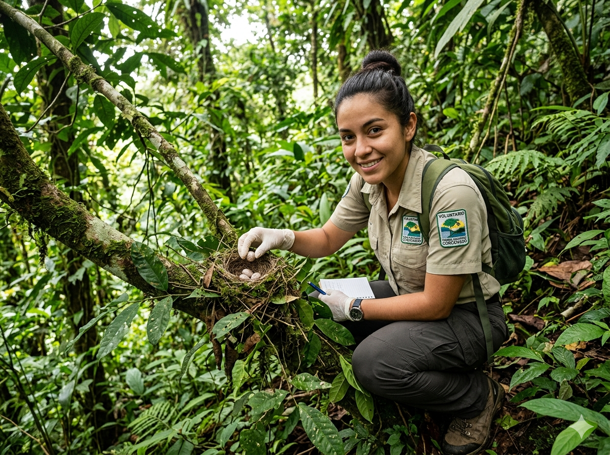
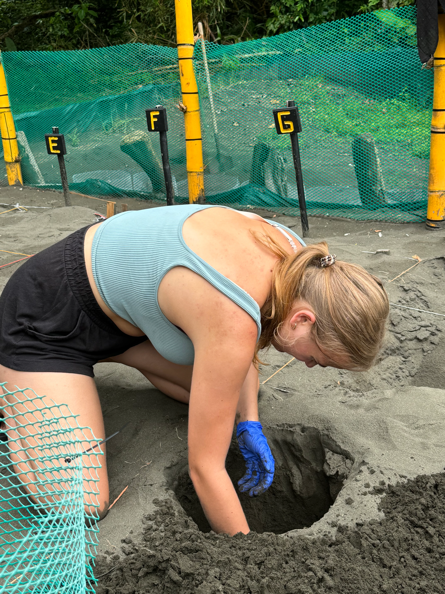

Educación Ambiental
Fortalecemos el liderazgo local, la conciencia infantil y la gestión comunitaria a través de programas educativos prácticos en escuelas rurales.
Conoce el programa
Cuatro pilares interconectados, un sistema de conservación. Cada programa aborda una capa diferente de la misma misión: proteger ecosistemas, educar a las comunidades y crear resultados duraderos para la naturaleza y las personas.
Fortalecemos el liderazgo local, la conciencia infantil y la gestión comunitaria a través de programas educativos prácticos en escuelas rurales.
Conoce el programa
Reforestación, monitoreo ecológico y recuperación de hábitats basada en la comunidad en la Península de Osa y áreas circundantes.
Conoce el programa
Protección y reubicación de nidos a lo largo de playas clave de anidación en la costa del Pacífico, asegurando el paso seguro de las crías al mar.
Conoce el programa
Fortalecimiento del Parque Nacional Corcovado a través de mejoras en infraestructura, apoyo a guardaparques y educación al visitante.
Conoce el programaCada programa es parte de un ecosistema de conservación más grande. Descubre cómo trabajan juntos para proteger Corcovado.
Tu contribución hace posibles estos programas. Cada donación financia directamente la conservación, la educación y el desarrollo comunitario en la Península de Osa.